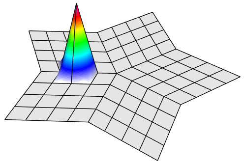
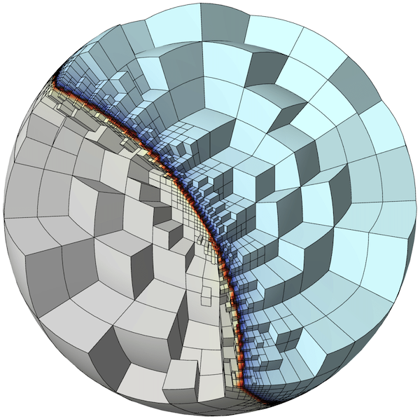
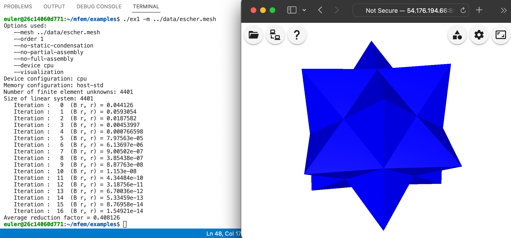
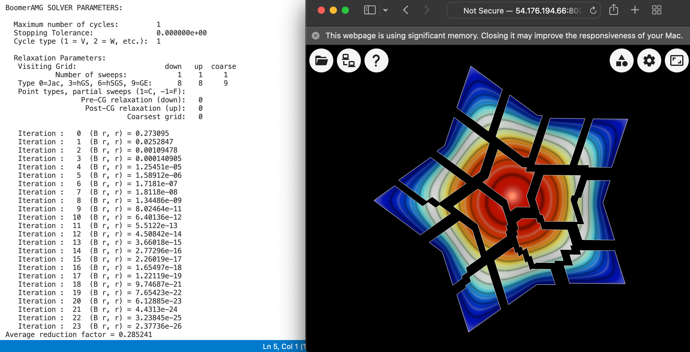
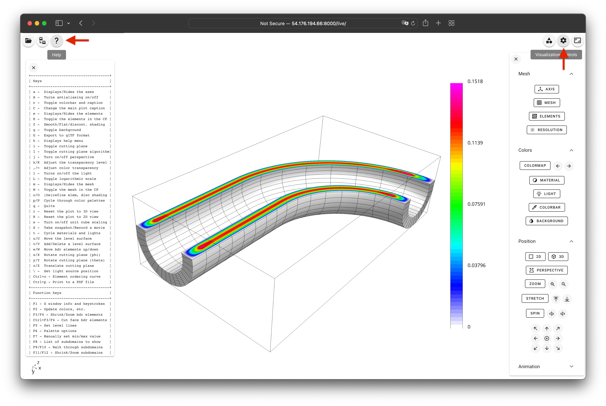

Finite Element Basics
45 minutes basic
Lesson Objectives
Learn how to launch serial and parallel runs of MFEM examples.
Learn how to visualize the results of MFEM simulations.
Note
Poisson equation
The Poisson Equation is a partial differential equation (PDE) that can be used to model steady-state heat conduction, electric potentials, and gravitational fields. In mathematical terms
$$ -\Delta u = f $$
where u is the potential field and f is the source function. This PDE is a generalization of the Laplace Equation.
To approximately solve the above continuous equation on computers, we need to discretize it by introducing a finite (discrete) number of unknowns to compute for. In the Finite Element Method (FEM), this is done using the concept of basis functions.
Instead of calculating the exact analytic solution u, we approximate it
$$ u \approx u_h := \sum_{j=1}^n c_j \varphi_j $$
where $u_h$ is the finite element approximation with degrees of freedom (unknown coefficients) $c_j$, and $\varphi_j$ are known basis functions. The FEM basis functions are typically piecewise-polynomial functions on a given computational mesh, which are only non-zero on small portions of the mesh.

With finite elements, the mesh can be totally unstructured, curved, and non-conforming:

To solve for the unknown coefficients, we multiply Poisson's equation by another (test) basis function $\varphi_i$ and integrate by parts to obtain
$$\sum_{j=1}^n\int_\Omega c_j \nabla \varphi_j \cdot \nabla \varphi_i = \int_\Omega f \varphi_i$$
for every basis function $\varphi_i$. (Here we are assuming homogeneous Dirichlet boundary conditions corresponding, for example, to zero temperature on the whole boundary.)
Since the basis functions are known, we can rewrite (3) as
$$ A x = b $$
where
$$ A_{ij} = \int_\Omega \nabla \varphi_j \cdot \nabla \varphi_i $$
$$ b_i = \int_\Omega f \varphi_i $$
$$ x_j = c_j $$
This is a $n \times n$ linear system that can be solved directly or iteratively for the unknown coefficients. Note that we are free to choose the computational mesh and the basis functions $\varphi_i$, and therefore the finite space, as we see fit.
Note
Annotated Example 1
MFEM's Example 1 implements the above simple FEM for the Poisson problem in the source file examples/ex1.cpp. We set $f=1$ in (1) and enforce homogeneous Dirichlet boundary conditions on the whole boundary.
Below we highlight selected portions of the example code and connect them with
the description in the previous section. You can follow along by browsing
ex1.cpp in your VS Code browser window. In the settings of this tutorial, the
visualization will automatically update in the GLVis browser window.
The computational mesh is provided as input (option -m), it could be 3D, 2D,
surface, hex/tet, etc. The following code
(lines 120-137)
loads the mesh from the given file, mesh_file; creates the corresponding
MFEM object mesh of class Mesh; and refines the mesh uniformly to about
50,000 elements. You can easily modify the refinement by changing the definition of ref_levels.
Mesh mesh(mesh_file, 1, 1);
int dim = mesh.Dimension();
int ref_levels = (int)floor(log(50000./mesh.GetNE())/log(2.)/dim);
for (int l = 0; l < ref_levels; l++)
{
mesh.UniformRefinement();
}
In the next section we create the finite element space, i.e., specify the finite
element basis functions $\varphi_j$ on the mesh. This involves the MFEM classes
FiniteElementCollection, which specifies the space (including its order,
provided as input via -o), and FiniteElementSpace, which connects the space
and the mesh.
Focusing on the common case order > 0, the code in lines
139-162
is essentially:
FiniteElementCollection *fec = new H1_FECollection(order, dim);
FiniteElementSpace fespace(&mesh, fec);
cout << "Number of finite element unknowns: " << fespace.GetTrueVSize() << endl;
The printed number of finite element unknowns (typically) corresponds to the size of the linear system $n$ from the previous section.
The finite element degrees of freedom that are on the domain boundary are then extracted in lines 164-174. We need those to impose the Dirichlet boundary conditions.
Array<int> ess_tdof_list;
if (mesh.bdr_attributes.Size())
{
Array<int> ess_bdr(mesh.bdr_attributes.Max());
ess_bdr = 1;
fespace.GetEssentialTrueDofs(ess_bdr, ess_tdof_list);
}
The method GetEssentialTrueDofs takes a marker array of Mesh boundary
attributes and returns the FiniteElementSpace degrees of freedom that belong
to the marked attributes (the non-zero entries of ess_bdr).
The right-hand side $b$ is constructed in lines
176-182.
In MFEM terminology, integrals of the form (6) are implemented in the
class LinearForm. The Coefficient object corresponds to $f$ from the
previous section, which here is set to $1$. You can easily specify more general
$f$ with other coefficient classes, e.g., FunctionCoefficient.
LinearForm b(&fespace);
ConstantCoefficient one(1.0);
b.AddDomainIntegrator(new DomainLFIntegrator(one));
b.Assemble();
The finite element approximation $u_h$ is described in MFEM as a GridFunction
belonging to the FiniteElementSpace. Note that a GridFunction object can be
viewed both as the function $u_h$ in (2) as well as the vector of degrees of
freedom $x$ in (7). See lines
184-188.
GridFunction x(&fespace);
x = 0.0;
We need to initialize x with the boundary values we want to impose as Dirichlet
boundary conditions (for simplicity, here we just set x=0 in the whole domain).
The matrix $A$ is represented as a BilinearForm object, with a specific
DiffusionIntegrator corresponding to the weak form (5). See lines
190-203.
BilinearForm a(&fespace);
if (pa) { a.SetAssemblyLevel(AssemblyLevel::PARTIAL); }
if (fa) { a.SetAssemblyLevel(AssemblyLevel::FULL); }
a.AddDomainIntegrator(new DiffusionIntegrator(one));
a.Assemble();
MFEM supports different assembly levels for $A$ (from global matrix to
matrix-free) and many different integrators.
You can also provide a variety of coefficients to the integrator, for example,
PWConstCoefficient to specify different material properties in different
portions of the domain.
The linear system (4) is formed in lines 205-207 and solved with a variety of options in lines 211-245. One simple case is:
OperatorPtr A;
Vector B, X;
a.FormLinearSystem(ess_tdof_list, x, b, A, X, B);
cout << "Size of linear system: " << A->Height() << endl;
GSSmoother M((SparseMatrix&)(*A));
PCG(*A, M, B, X, 1, 200, 1e-12, 0.0);
The method FormLinearSystem takes the BilinearForm, LinearForm,
GridFunction, and boundary conditions (i.e., a, b, x, and ess_tdof_list);
applies any necessary transformations such as eliminating boundary conditions
(specified by the boundary values of x, applying conforming constraints for
non-conforming AMR, static condensation, etc.); and produces the corresponding
matrix $A$, right-hand side vector $B$, and unknown vector $X$.
In the above example, we then solve A X = B with a
conjugate gradient iteration,
using a simple Gauss-Seidel
preconditioner. We set the maximum number of iterations to 200 and a convergence
criteria of residual norm reduction by 6 orders of magnitude (1e-12 is the square of
that relative tolerance).
Solving the linear system is one of the main computational bottlenecks in the FEM. It can take many preconditioned conjugate gradient (PCG) iterations depending on the problem size, the difficulty of the problem, and the choice of the preconditioner.
Once the linear system is solved, we recover the solution as a finite element
grid function, and then visualize and save the final results to disk (files
refined.mesh and sol.gf). See lines
247-267.
a.RecoverFEMSolution(X, b, x);
ofstream mesh_ofs("refined.mesh");
mesh.Print(mesh_ofs);
ofstream sol_ofs("sol.gf");
x.Save(sol_ofs);
socketstream sol_sock("localhost", 19916);
sol_sock << "solution\n" << mesh << x << flush;
Parallel Example 1p
Like most MFEM examples, Example 1 has also a parallel version in the source file
examples/ex1p.cpp, which
illustrates the ease of transition between sequential and MPI-parallel code. The
parallel version supports all options of the serial example, and can be executed
on varying numbers of MPI ranks, e.g., with mpirun -np. Besides MPI, in parallel
we also depend on METIS for mesh partitioning and
hypre
for solvers.
The differences between the two versions are small, and you can compare them for yourself by opening both files in your VS Code window.
The main additions in ex1p.cpp compared to ex1.cpp are:
Initializing MPI and hypre
Mpi::Init();
Hypre::Init();
Splitting the serial mesh in parallel with additional parallel refinement
ParMesh pmesh(MPI_COMM_WORLD, mesh);
int par_ref_levels = 2;
for (int l = 0; l < par_ref_levels; l++)
{
pmesh.UniformRefinement();
}
Using the Par-prefixed versions of the classes
ParFiniteElementSpace fespace(&pmesh, fec);
ParLinearForm b(&fespace);
ParGridFunction x(&fespace);
ParBilinearForm a(&fespace);
Parallel PCG with hypre's algebraic multigrid BoomerAMG preconditioner
Solver *prec = new HypreBoomerAMG;
CGSolver cg(MPI_COMM_WORLD);
cg.SetRelTol(1e-12);
cg.SetMaxIter(2000);
cg.SetPrintLevel(1);
cg.SetPreconditioner(*prec);
cg.SetOperator(*A);
cg.Mult(B, X);
Note
BoomerAMG preconditioner independent of
the mesh size, coefficient jumps, and number of MPI ranks. Note, however, that
algebraic multigrid has a non-trivial setup phase, which can be comparable in
terms of time with the PCG solve phase. For more details, see the
Solvers and Scalability
page.
Serial and parallel runs
Both ex1 and ex1p come pre-built in the tutorial environment. You can see a
number of sample runs at the beginning of their corresponding source files when
you open them in VS Code.
To get a feel for how these examples work, you can copy and paste some of these runs from the source to the terminal in VS Code. For example try these runs in the VS Code terminal.
./ex1 -m ../data/escher.mesh
./ex1 -m ../data/l-shape.mesh
./ex1 -m ../data/mobius-strip.mesh

Warning
PATH so make
sure to add ./ before the executable, e.g.,
./ex1 -m ../data/pipe-nurbs.mesh not
ex1 -m ../data/pipe-nurbs.mesh.
Note
Here are some sample parallel runs:
mpirun -np 16 ex1p
mpirun -np 16 ex1p -m ../data/pipe-nurbs.mesh
mpirun -np 48 ex1p -m ../data/escher-p2.mesh

The above plot shows the parallel decomposition in the first sample run, with the following manipulations in the GLVis window: pressing keys R, j, b, g, F11 twice, p a number of times, and zooming in with the Right mouse button.
GLVis interface
GLVis is a lightweight tool for accurate and flexible finite element visualization based on MFEM. In this tutorial we use its web version, which should work on any machine with a modern browser, including mobile touch devices such as tablets and phones.
Note
GLVis natively understands finite element data and can manipulate it in various ways through the web interface or by typing (case sensitive) keystrokes in the GLVis window.
To access the web interface, move to the top right of the GLVis window and press
the Visualization controls icon . This will open a
number of buttons for controlling the mesh, colors, and position of the plot:

You can perform additional operations with the GLVis key commands and mouse
functions. Most of them are described in the Help window that appears when
clicking the icon in the upper left corner, or
by pressing the h key.
Some of the more useful key commands and mouse functions are:
- A — Turn on/off the use of anti-aliasing/multi-sampling
- b — Toggle the boundary in 2D scalar mode
- c — Show/hide color bar
- F11 / F12 — Shrink/Zoom parallel subdomains
- g — Toggle background color (white/black)
- i — Toggle cutting plane
- j — Turn on/off perspective
- Left — Rotate the plot
- Left + Shift — Spin the plot (according to the dragging vector)
- m — Toggle the mesh state.
- p / P — Cycle through color palettes (lots of options)
- r — Reset the plot to 3D view
- R — Cycle through 2D projections (looking above/below in
x/y/zdirections) - Right — Zoom in/out
- S — Take an image snapshot
- space — Pause solution update in time-dependent simulations
- t — Cycle materials and lights
- x / X — Rotate cutting plane (
\phi) in 3D - y / Y — Rotate cutting plane (
\theta) in 3D - z / Z — Translate cutting plane in 3D
Note that you may need to press fn and/or Ctrl to escape some of the function keys.
For more details, see the full list of key commands and mouse functions in the GLVis README.
Warning
pkill -f glvis-browser-server, then force-reload the GLVis
browser window and connect again.
Questions?
Next Steps
Back to the MFEM tutorial page